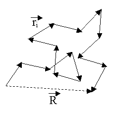

This is a ipython notebook which demonstrates how to use MDAnalysis package:
from MDAnalysis import *
import numpy as np
%matplotlib inline
u = Universe("poly.psf", "poly.pdb")
print u
<Universe with 12000 atoms and 11700 bonds>
u.atoms
<AtomGroup with 12000 atoms>
Now we have imported a universe, which has all of our frames and information of our system. Accessing it becomes pretty straightforward:
a = u.selectAtoms("all")
a.positions
array([[-11.71399975, -8.36999989, 21.4810009 ],
[-11.65499973, -8.65400028, 20.80699921],
[-11.21700001, -9.38300037, 21.23900032],
...,
[ 8.22000027, -6.82600021, 1.65400004],
[ 8.67800045, -7.45300007, 1.37300003],
[ 8.41399956, -7.28299999, 0.65499997]], dtype=float32)
Now imagine we want to find something in our selection, lets say center of mass, vous a la:
a.centerOfMass()
array([ 0.27253684, 1.12546084, 1.68031492])
MDanalysis allows you to access some other fields rather than just atoms:
a.bonds
<TopologyGroup containing 11700 Bonds>
b1 = a.bonds.atom1.positions
b2 = a.bonds.atom2.positions
bonds_vectors = (b2-b1)
bonds_vectors
array([[ 0.05900002, -0.2840004 , -0.67400169],
[ 0.43799973, -0.72900009, 0.43200111],
[ 0.6960001 , -0.99399948, -0.7159996 ],
...,
[-0.43400002, -0.8380003 , -1.17799997],
[ 0.45800018, -0.62699986, -0.28100002],
[-0.26400089, 0.17000008, -0.71800005]], dtype=float32)
This way we can write a function that takes a Universe as an input and produces a normalized bond_vector list as an output:
def get_bondlist_coords(u):
"""
input: Universe
output: bonds (that are in the domain, normalized)
generate normalized coordinates of bond vectors
get universe , return bonds(coordinates)
generate coor of all bonds(bond = chord i-1 - i+1 ), normalize it
"""
bonds = u.bonds.atom2.positions - u.bonds.atom1.positions
# angles = u.angles
# bonds = angles.atom3.positions - angles.atom1.positions
# coords = angles.atom2.positions
norm = np.linalg.norm(bonds,axis=1)
bonds /= norm[:, None] #the norm vector is a (nx1) and we have to create dummy directions -> (n,3)
return bonds
get_bondlist_coords(u)
array([[ 0.08040691, -0.38704386, -0.91854876],
[ 0.45917124, -0.76423758, 0.45288265],
[ 0.49398914, -0.70549554, -0.5081839 ],
...,
[-0.28753173, -0.55518818, -0.78044319],
[ 0.5546512 , -0.7593146 , -0.34029898],
[-0.33688259, 0.21693134, -0.91621554]], dtype=float32)
Interesting project:
Lets calculate something more interesting, say Mean Square Internal Difference parameter for the trajectory. Our script will be able to consider polydisperse chains as well as monodisperse ones. Imagine we have a polymer of the size 2N atoms per chain. So by definition :
\begin{equation*}
R_{ij} = (r_i - r_j)
\end{equation*}
\begin{equation*}
MSID = < \dfrac{R^2_{ij}(i-j)}{|i-j|} >
\end{equation*}
, where :
\begin{equation*}
i = 0,..,N//2, j = N-i-1
\end{equation*}
averaging is being done over all chains
import matplotlib.pyplot as plt
def max_chain(u):
"""
input: MDAnalysis universe
output: maximum length of all of the chains present(integer)
"""
maxlen=0
for res in u.residues:
reslen=len(res)
if maxlen<reslen:
maxlen=reslen
# print "maxlen = %f" % maxlen
return maxlen-1
def save_plot_r2n(n_array, R2_array,psffile,frame,logplot=False):
"""
input: n_array - array of n's, R2_array - array of R_n, psffile - name of future files, frame, logplot
saves a frame of r2_n
"""
# plt.cla()
plt.ylabel(r'$\mathrm{\frac{R^2(n)}{n}}$')
if logplot==True:
print "xlogscale"
plt.xscale('log')
plt.xlabel(r'$\mathrm{log(N)}$')
else:
print "regular xscale"
plt.xlabel(r'$\mathrm{N}$')
plt.title(r'$\mathrm{\frac{R^2(n)}{n} evolution, frame = %s} $' % (frame) )
plt.plot(n_array,R2_array,'--')
plt.show()
# plt.savefig('R2%s_%.5d.png' % (psffile,frame))
return None
def get_r2n(u,psffile,frame,Noff=1,logplot=False):
"""
create a list of
R2_array - array of distances
n_array - array of number of bonds between atoms
k_array - array of number of atoms with this bonds
start looping in residues
for every residue:
start from the middle of it
calculate the closest atom_i - atom_-i
if it is the first time we have the number of bonds so big, we expand our lists by appending
else: we just put it to the nth position
then the last elements of the array will be deleted, since there is not enough statistics for this chains
"""
R2_array = []
n_array = []
k_array = []
for res in u.residues:
chainlen = len(res)/2
for i in range(chainlen)[::-1]:
ag1, ag2 = res.atoms[i].pos, res.atoms[-i-1].pos
tmpdiff = ag1-ag2
r2 = np.dot(tmpdiff,tmpdiff)
n = (chainlen-i)
# print n
# calc n
if n >= len(R2_array):
R2_array.append(r2)
n_array.append(2*n-1)
k_array.append(1)
else:
R2_array[n] += r2
k_array[n] += 1
n_array[n] = n*2-1
R2_array = np.array(R2_array)
n_array = np.array(n_array)
k_array = np.array(k_array)
R2_array /= k_array*n_array
R2_array = R2_array[:-Noff]
n_array = n_array[:-Noff]
save_plot_r2n(n_array, R2_array,psffile,frame,logplot)
return None
get_r2n(u,"myfile",0,Noff=1,logplot=False)
regular xscale
comments powered by Disqus